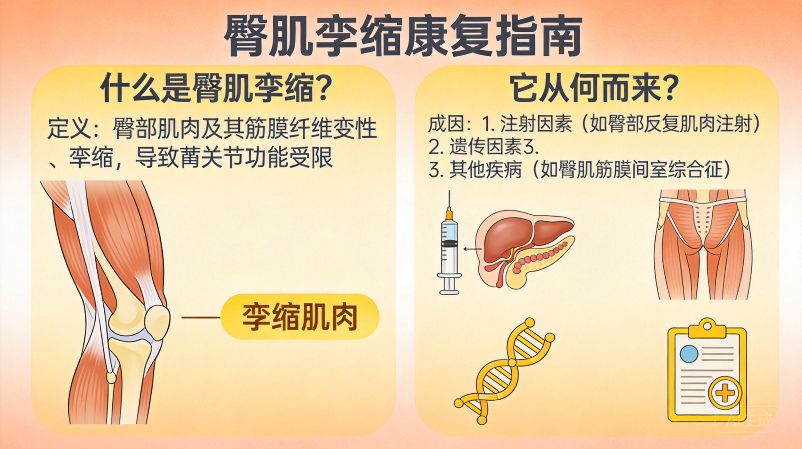
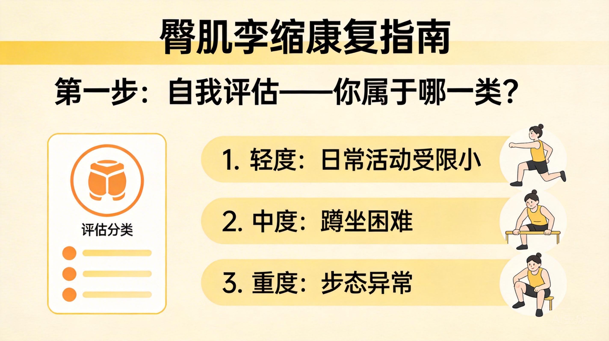
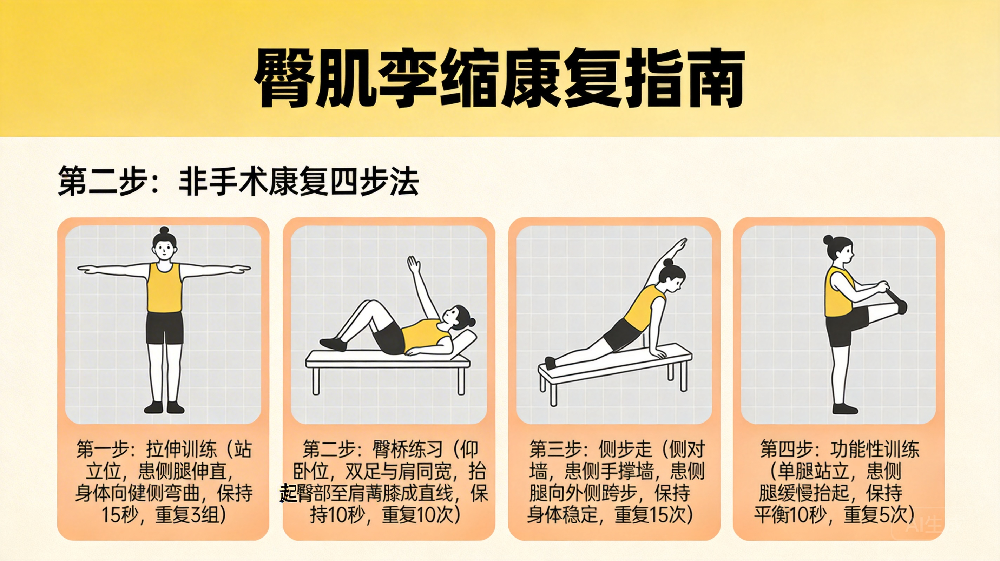

臀肌挛缩不用开刀？这份非手术康复指南，90% 的人都不知道！
你是否经常感到走路"外八"、下蹲困难、甚至坐姿时双腿无法并拢？
你是否被医生告知"臀肌挛缩"，却被告知"只能手术"而感到焦虑？
别急！其实，轻中度臀肌挛缩完全可以通过科学的非手术康复手段显著改善，甚至恢复正常功能。今天，我们就来系统拆解臀肌挛缩的成因、评估方法与一套可操作、可落地的非手术康复方案——无论你是患者、康复师，还是关注体态健康的普通人，这篇文章都值得收藏。
什么是臀肌挛缩？它从何而来？

臀肌挛缩（Gluteal Muscle Contracture, GMC）是指臀大肌、臀中肌等臀部肌肉因反复刺激（如长期反复肌肉注射、过度训练、慢性炎症等）导致纤维化、弹性下降，进而限制髋关节正常活动范围的一种功能性障碍。
⚠️ 注意：臀肌挛缩≠肌肉紧张！它是结构性改变，但早期仍具可逆性。
常见表现包括：
- 下蹲时"划圈"或无法全蹲（膝盖无法并拢）
- 坐位时双腿自然外展，难以并膝
- 走路呈"外八字"
- 髋关节屈曲、内收、内旋受限
第一步：自我评估——你属于哪一类？

✅ 简易自测法（Ober 试验 + 下蹲测试）
- Ober 试验：侧卧，上方腿伸直，缓慢下落。若大腿无法自然贴向床面，提示臀肌紧张/挛缩。
- 全蹲测试：双脚并拢尝试深蹲。若出现以下情况，可能为臀肌挛缩：
- 脚跟离地
- 膝盖外展（"青蛙蹲"）
- 身体后仰或失去平衡
第二步：非手术康复四步法

🔹 阶段一：软组织松解
目标：降低肌筋膜张力，改善局部血液循环。
1. 泡沫轴放松臀大肌/阔筋膜张肌
- 坐于泡沫轴上，患侧腿交叉置于对侧膝上（"4 字姿势"）
- 缓慢滚动臀部外侧，找到痛点后停留 30 秒，重复 3 次
- 每日 1–2 次，每次 5 分钟
🔹 阶段二：动态拉伸
每天坚持以下拉伸，每次保持 30 秒，每侧重复 2–3 组：
1. 改良鸽子式（Pigeon Pose）
- 前腿屈膝 90°，小腿平行垫子前缘
- 后腿伸直，髋部下沉至地面
- 若无法贴地，可在臀下垫毛巾
🔹 阶段三：神经肌肉激活
核心训练动作：
- 侧卧蚌式（Clamshell）：每组 15 次×3 组
- 臀桥进阶（单腿臀桥）：每侧 10 次×3 组
- 抗阻髋外展（弹力带）：10 步/侧×3 组
🔹 阶段四：功能整合训练
- 深蹲模式重建：从靠墙静蹲开始，逐步过渡到无辅助全蹲
- 步态再教育：行走时有意识内收脚尖，避免外八
- 坐姿调整：避免长时间跷二郎腿
康复周期与预期效果
- 轻度患者：坚持 4–6 周，症状可缓解 70% 以上
- 中度患者：需 8–12 周系统训练，配合定期评估调整方案
📊 研究显示：85% 的轻中度臀肌挛缩患者经 12 周保守治疗后，髋关节内收角度平均增加 15°–20°